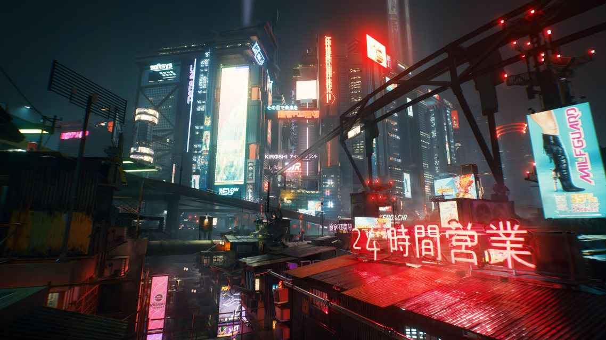

SCENARIO
Préparez le coup du siècle : volez un implant unique qui est la clé de l'immortalité, et forgez votre légende dans le vaste mode ouvert qu'est Night City. Ici, les choix que vous faites changeront le cours de l'histoire et les relations avec les personnages qui vous entourent. Complétez des missions diverses et variées pour vous faire un nom, et passez de simple mercenaire à cyberpunk de légende. Au fil de l'aventure, vous lèverez également le voile sur le mystère qui plane autour de ce fameux implant que tout le monde vous envie.

NIGHT CITY
L'histoire de Cyberpunk 2077 prend place sur Terre en 2077 et se déroule dans la mégapole futuriste de Night City dans l’État libre de Californie. Dans ce monde futuriste à tendance cyberpunk et dystopique où règnent la pauvreté et les inégalités, l'influence des mégacorporations est prédominante celles-ci ayant pris le pas sur les gouvernements et dictant leur loi, ainsi que celle du cyberespace, la « Nouvelle Frontière » de cette époque

VOTRE LÉGENDE COMMENCE ICI
Dans ce jeu le joueur incarne le personnage de V (Vincent ou Valérie), un cyber-mercenaire qui commence sa carrière à Night City au cours de l'une des trois courtes introductions possibles, selon ses origines (« Nomade », « Gosse des rues » ou « Corpo »), aboutissant à l’aventure principale au sein de Night City.
PERSONNAGES
Faites la rencontre de personnages mémorables, tels que le rockeur rebelle Johnny Silverhand (interprété par Keanu Reeves), des fixers qui vous donneront des contrats, et faites vous tout un tas d'amis et d'ennemis qui auront tous leurs propres objectifs. Il sera parfois difficile de choisir qui aider, et certaines décisions vous poursuivront tout au long du jeu